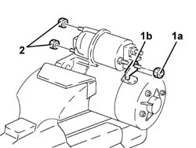
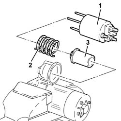

5520B18 starter motor solenoids - r+r with motor removed
- Path
- Procedures > 55 ELECTRICAL EQUIPMENT > 5520 ENGINE STARTING > 5520B starter motor and components > 5520B18 starter motor solenoids - r+r with motor removed
- Kind
- repair procedure (removal / refitting; the operation number is the code)
- Applies to
- engines: 1.2 8v, 1.6 16v, 1.3 JTD 16V, 1.9 JTD 8V, 1.9 DIESEL; all production periods
- Interactive page
- https://sloeber94.github.io/elrnDB-fDbl/en/#/2584914
Applies to: engines: 1.2 8v, 1.6 16v, 1.3 JTD 16V, 1.9 JTD 8V, 1.9 DIESEL; all production periods
 Removing
Removing
 Refitting
RefittingPosition the starter motor in the vice fitted with protective jaws.
1. Undo the nut (1a) and disconnect the electrical supply terminal (1b).
2. Undo the nuts fixing the starter motor solenoid.

Applies to: engines: 1.2 8v, 1.6 16v, 1.3 JTD 16V, 1.9 JTD 8V, 1.9 DIESEL; all production periods
1. Remove the fixed section of the solenoid.
2. Remove the spring.
3. Remove the moving section of the solenoid.

Applies to: engines: 1.2 8v, 1.6 16v, 1.3 JTD 16V, 1.9 JTD 8V, 1.9 DIESEL; all production periods
Refitting
RemovingClean the components with compressed air and a clean cloth (do not use liquid detergents).
Lubricate the sliding surfaces of the moving parts with grease and fix the solenoid.
Place the electromagnet, complete with spring, back in its housing and secure it using the nuts.
Connect the electrical supply terminal and secure it using the nut.
Remove the starter motor from the vice.